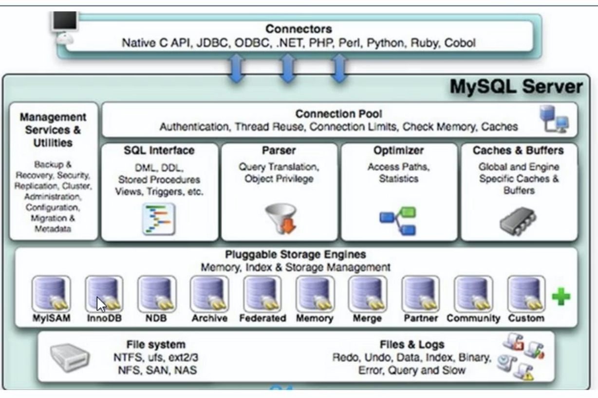
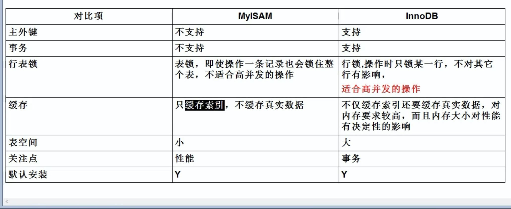

xxxxxxxxxxmysql -h localhost -P 3306 -u root -pxxxxxxxxxxselect distinct field1,field2,......from table1 join类型join table2 on join条件where 筛选条件group by 分组条件having 分组筛选条件order by 排序条件limit 分页数量;xxxxxxxxxxdesc tablename; //查看表结构use databasenameshow basename tablenamecreate tablecreate databaseselect database() version()默认是有符号的,使用unsigned来规定为无符号,如果超出范围,会设置为临界值
| 类型 | 字节数 |
|---|---|
| tinyint | 1 |
| smallint | 2 |
| mediumint | 3 |
| Int/integer | 4 |
| bigint | 8 |
| 类型 | 字节数 |
|---|---|
| float | 4 |
| double | 8 |
xxxxxxxxxxfloat(5,2) //小数点后面为2位,总长度为5// 浮点型默认无精度| 类型 | 字节 |
|---|---|
| dec/decmal | M+2 |
xxxxxxxxxx//dec默认精度(10 , 0)//定点型精度较高//dec(M,D);较长的文本text bolb(二进制) ;较短的文本char , varchar
| 类型 | 字符数 |
|---|---|
| char(M) | M |
| varchar(M) | M |
| binary(M) | M |
| varbinary(M) | M |
| enum(‘a’,'b','c') | |
| set |
//char固定长度,空间消耗高;varchar反之
//binary/varbinary保存二进制字符串
//enum枚举,不区分大小写,只可插入枚举之内的字符串,set不同的是可以多个,enum只能一个
| 类型 | 字节 |
|---|---|
| date | 4 |
| datetime | 8 |
| timestamp | 4 |
| time | 3 |
| year | 1 |
data query language 数据查询语句
xxxxxxxxxxselect field1,field2 from tablename;select * from tablename;//重命名select field1 as f1 ,field2 as f2 from tablename;select field1 f1 ,field2 f2 from tablename;select field1 as f1 from tablename as tn;//去重 distinctselect distinct field from tablename;//排除nullselect ifnull(field1,0) from tablename;//拼接( + 会转换字符型为整型,不成功则为0 如果为null则结果一定为null)select concat(field1,field2) from tablename;select version();select database();xxxxxxxxxx//逻辑 and or not (连接条件)select * from tablename where field1 > 12000 and field2 < 30;//条件 < > <= >= != = <> <=>select * from tablename where field1 > 12000;select * from tablename where field1 <=> null; // <=> 安全等于select * from tablename where field1 <=> 12000;//模糊 like , between and , in , is nullselect * from tablename where field1 like '*a*';(用正则表达式)select * from tablename where field1 between 100 and 200;select * from tablename where field1 in ( 'var1','var2'); //判断所否为in内的某个值select * from tablename where field1 is null;select * from tablename where field1 is not null;xxxxxxxxxxselect * from tablename where field ... order by field asc | desc ;(升序|降序)select * from tablename where field ... order by field1 asc , field2 desc;xxxxxxxxxx//单行函数 //字符类//length(字节数) , concat(拼接字符串) ， upper , lower(大小写) ， substr(截取字符) , //instr(返回子串第一次的索引) ， trim(去掉前后空格或指定字符) ， lpad ， rpad(往左/右填充指定字符)//replace(替换)select length(field1) from tablename;select substr(field, start ,end) from tablename;select trim('a' from field1) from tablename;select lpad(field1 , 2 , '*') from tablenames;select replace(field1 , 'a' , '*') from tablename;//数学//round(四舍五入) ， ceil(向上取整 >= ) , floor(向下取整 <= ) , truncate(截断) , mod(取余)select round(1.567,2); //1.57select truncate(1.6999 , 1); //1.6select mod(-10,3); //-1 mod(a,b)=a-a/b*b 与被除数符号相同//日期//now(系统日期时间) ， curdata(现在日期) ， curtime(现在时间) ， year ， month , monthname ....//str_to_date(字符转日期) , date_format(日期转字符)select year(now());select year('1992-08-06');select str_to_date('1992-8-6','%Y-%m-%d');select date_format(now() , '%年%月%日');//其他 version ， database ， userselect database() version();//流程控制图//if caseselect field1 if(field1 is null , 'true' , 'false') from tablename;//分组//sum , avg , max , min , countselect sum(field1) from tablename;select count(*) from tablename; //统计行数select count(1) from tablename; //同上xxxxxxxxxxselect sum(field1) , field2 from tablename group by field2;//筛选后分组select sum(field1) , field2 from tablename where field3 < 3 group by field2;//having 分组后筛选select count(*) , field1 from tablename group by field1 having count(*)>2;//按函数分组select count(*) , length(field1) from tablename group by length(field1);//按多个字段分组select avg(*) , field1 , field2 from tablename group by field1 , field2;//分组排序select avg(*) , field1 , field2 from tablename group by field1 , field2 order by avg(*) desc;xxxxxxxxxx//等值链接//从多个表中取数据，需要加链接条件select field1 , field2 from tablename1 , tablename2 where tablename1.field3 = tablename2.field4;//非等值链接select field1 , field2 from tablename1 t1 , tablename2 t2 where t1.field3 between t2.field4 and field5//自连接select t1.field1 , t2.field2 from tablename1 t1 , tablename1 t2 where t1.field3 = t2.field4;//sql99 join on//连接类型：inner(内连接) left(左外) right(右外) full(全外) cross(交叉)//内链接包括等值，非等值，自连接select field1 , field2 from tablename1 t1 inner join tablename2 t2 on t1.field3 = t2.field4;//外联接：查询这个表，另一个表没有select field1 , field2 from tablename1 t1 left join tablename2 t2 on t1.field3 = t2.field4;xxxxxxxxxx//where 和 having 后面select * from tablename where field1 > (select filed2 from tablename2);select * from tablename where field1 all (select filed2 from tablename2); //any in//select 后面//from后面//exists后面xxxxxxxxxx//limit 分页提交sql offset初始值为0 size为要查询的数据条数select * from tablename limit offset,size;xxxxxxxxxx//union 将多条查询语句的结果合并成一个结果,可以来自多个表,会去掉重复项select * from tablename1 where unionselect * from tablename2 where ...... ;//合并多个查询//不去重 union allselect * from tablename1 where union allselect * from tablename2 where ...... ;//等价于select * from tablename where condition1 or where condition2;xxxxxxxxxx//insert field可以省略insert into tablename(field1 ......) values (val1 ......) , (val1 ......);insert into tablename values (val1 ......) , (val1 ......);//子查询insert into tablename select * from tablename2;//set 不支持同时插入多条insert into tablename set filed1=val1 , field2=val2 ......;xxxxxxxxxx//delete from 可回滚delete from tablename where ...... ;delete tb1 ,tb2 from tablename1 tb1 inner join tablename2 tb2 on 连接条件 where 筛选条件;//truncate 删除表所有信息(清空) 不可回滚truncate table tablename;xxxxxxxxxx//updateupdate tablename set field1=val1 , field2=val2 where ......;//多表修改update tablename tb2 inner join tablename tb2 on condition set field1=val1 , field2=val2 where ......;data define language 数据定义语言
xxxxxxxxxx//create datebase 创建create database basename;create database if not exists basename; //已存在就不创建了//drop 删除drop database basename;drop database basename if exists basename;xxxxxxxxxx//create table 创建create table tablename (field1 类型(长度) [约束] [标识], .... );//复制//复制结构create table copytablename like tablename;//包括数据复制create table copytablename select * from tablename;create table copytablename select field1 , field2 from tablename;create table copytablename select field1 , field2 from tablename where 0; //创建部分字段的空表//修改//修改列名alter table tablename change column oldfield newfield 新类型;//修改类型及约束alter table tablename modify column field 新类型 [约束];//添加列alter table tablename add column field 类型;//删除列alter table tablename drop column field;//修改表名alter table tablename rename to newtablename;//删除表drop table tablename;xxxxxxxxxxnot null //非空约束default //默认值约束primary key //主键约束,该字段的值具有唯一性,并且非空,一个表中只有一个 , 可以组合unique //该字段的值具有唯一性,可以为空 , 一个表中可以有多个 , foreign key //外键约束,保证该字段的值必须来自主表的关联列的值.在从表添加外键约束,用于引用主表某列的值xxxxxxxxxxcreate table tablename(field1 int primary key , field2 varchar(20) not null , field3 char(1) check(field3='man' or field3='women') , field4 int unique, field5 int default 18 , field6 int foreign key references tablename(field1) );xxxxxxxxxxcreate table tablename(field1 int , field2 varchar(20) , field3 char(1) , field4 int , field5 int , field6 int , constraint pk primary key(field1), ...... );xxxxxxxxxx// auto_increment 自增涨 , 需要和一个key搭配 , 一个表只有一个 , 并且字段为数值型create table tablename(field1 int primary key auto_increment)set auto_increment_increment = 3;设置步长为3Transaction control language (事务控制语言)
事务:由一个或者多个sql语句组成,要么全部执行,要么全部不执行(中间不成功会回滚)
ACID属性:
1.atomicity 原子性
2.consistency 一致性
3.isolation 隔离性
4.durability持久性
xxxxxxxxxxset autocommit = 0 ; // 关闭自动提交 , 开启事务... //一系列操作...commit ; //操作成功则提交事物rollback ; //操作失败则回滚回滚点
xxxxxxxxxxset autocommit = 0 ;... //一系列操作savepoint a;...rollback ; //操作失败,回滚到amysql默认repeatable read
| 隔离级别 | 描述 | 带来的问题 |
|---|---|---|
| read uncommitted | 可以读取未提交的事物 | 脏读,不可重复读,幻度 |
| read committed | 只能读取提交过后的事物 | 不可重复读,幻读 |
| repeatable read | 当前事物不受其他事物影响 | 幻读 |
| serializable | 必须等其他事务完成,该事物才可以继续 | 无并发问题 |
xxxxxxxxxxset session | global transaction isolation level 隔离级别 ;select @@tx_isolation;是一种虚拟存在的表,在使用时动态生成,只保留了sql逻辑,并没有保存数据
xxxxxxxxxx//创建视图create view viewname asselect * from tablename where field1 = '1';//使用视图,把视图当作一张临时的表select * from viewname where field2 = '2';//修改视图create or replace view viewname asselect * from tablename where field1 = '1';alter view viewname as select * from tablename where field1 = '1';//删除视图drop view viewname1 , viewname2 ;//查看视图desc viewname;包含以下sql语句的视图不允许更新：
分组 ，distinct， group by ，having， union ，union all
truncate 不支持回滚
xxxxxxxxxx//查看所有系统变量,会话变量global改为sessionshow global variables;show global variables like "%a";//查看指定全局变量select @@global.var1;//设置指定变量，只对所有链接有效，重启的会话无效set @@global.var1 = 0;//自定义变量set @var1=值;set @var1：=值;select @var1：=值;select ...... into @var1 from ......;//查看自定义变量select @var1;//局部变量 只在begin end中有效//声明 declare 变量名 类型;declare 变量名 类型 default 值;就是可以传参数的自定义函数，适合曾删改
xxxxxxxxxx//创建存储过程create procedure 过程名（参数）begin ......sql语句;end参数包含：参数模式，参数名，参数类型参数模式有：in，out，inout//调用存储过程call 过程名（实参）//删除存储过程drop procedure 过程名;//查看存储过程show create procedure 过程名;有且只有一个返回值，适合处理数据
xxxxxxxxxx//创建函数create function 函数名（参数列表）returns 返回类型begin ...... return 返回值;end//调用select 函数名（参数列表）//删除drop function 函数名;//查看show create function 函数名;分支结构
xxxxxxxxxx// if// case// while loop repeat iterate leavexxxxxxxxxx//log-bin 二进制日志 , 用于主从复制//log-error 错误日志//log 查询日志//数据文件 :frm : 存放表结构myd : 存放表数据myi : 存放表索引

1.连接层
2.服务层
3.引擎层
4.存储层

索引的底层有B树，B+树，hash索引
单值索引：一个表可以有多个单列索引
唯一索引：索引列的值必须唯一，单允许有空值，unique
复合索引：一个索引包含多个列
xxxxxxxxxx//创建create [unique] index indexname on tablename(field(length));alter tablename add [unique] index indexname on (field(length));//删除drop index indexname on tablename;//查看show index from tablename;何时建立索引:
1.主键自动建立索引 2.频繁查询的字段 3.关联字段，外键关系建立索引 4.频繁更新字段不适合索引 5.where里面不会用到的字段 6.排序字段 7.高并发下倾向建立组合索引 8.分组或者统计都需建立索引 9.经常增删改的表不要建立索引（插入删除也需要更新索引）
xxxxxxxxxx// explain sql语句idselect_typetypekey记录mysql中响应时间超过阈值的语句，具体指超过long_query_time的sql，默认为10秒
xxxxxxxxxx//默认没有开启，需要手动开启show variables like "%slow_query_log%";slow_query_log ONslow_query_log_file W56-560164-slow.logset global slow_query_log = 1;//设置时间show variables like "%long_query_time%";long_query_time 10.000000set global long_query_time 5.0//查询日志cat /usr/local/mysql/***.log辅助分析工具mysqldumpslow
xxxxxxxxxxshow variables like 'profiling';show profiles;xxxxxxxxxx//my.confset global general_log = 1;set global log_otput='table';select * from mysql general_log;xxxxxxxxxx1.最佳左前缀法则：建立复合索引时，要先使用最左的索引，不然就会索引失效2.中间不可断：同上，中间索引不使用会导致后续的索引失效3.在索引列，使用函数，改变数据类型，会使索引失效4.范围 之后的索引全部失效5.select 字段尽量和索引对应，减少使用select *6.!=会导致索引失效7.like "%aa%" %号在左边会索引失效，覆盖索引可以解决8.字符窜不加‘’会索引失效，同理隐式类型转换都会9.少用or，链接时会索引失效
xxxxxxxxxxselect * from A where id in (select id from B); // A>Bselect * from A where exists (select * from B where B.id=A.id); // B>A读锁（共享锁）：针对同一份数据，多个读操作可以同时进行而不会相互影响
写锁（排它锁）：当前写操作没有完成，它会阻断其他写锁和读锁
xxxxxxxxxxsession1加读锁session1 可读，不可写，不可读写其他表 session2 可读 ，写时会阻塞 ，可读写其他表session1加写锁session1 可读，可写，不可读写其他表 session2 读 ，写都会阻塞 ，可读写其他表
表锁（偏读）：
行锁（偏写）：
xxxxxxxxxx//给表加锁lock table tablename read , tablename write;//解锁unlock tables;